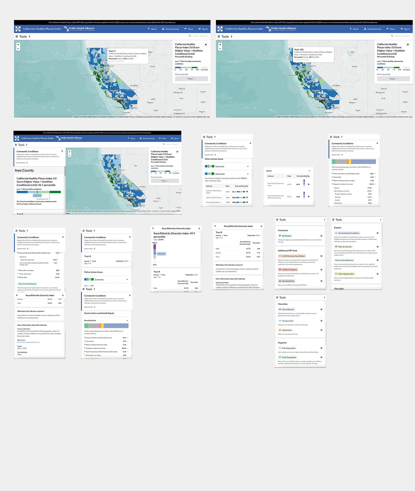
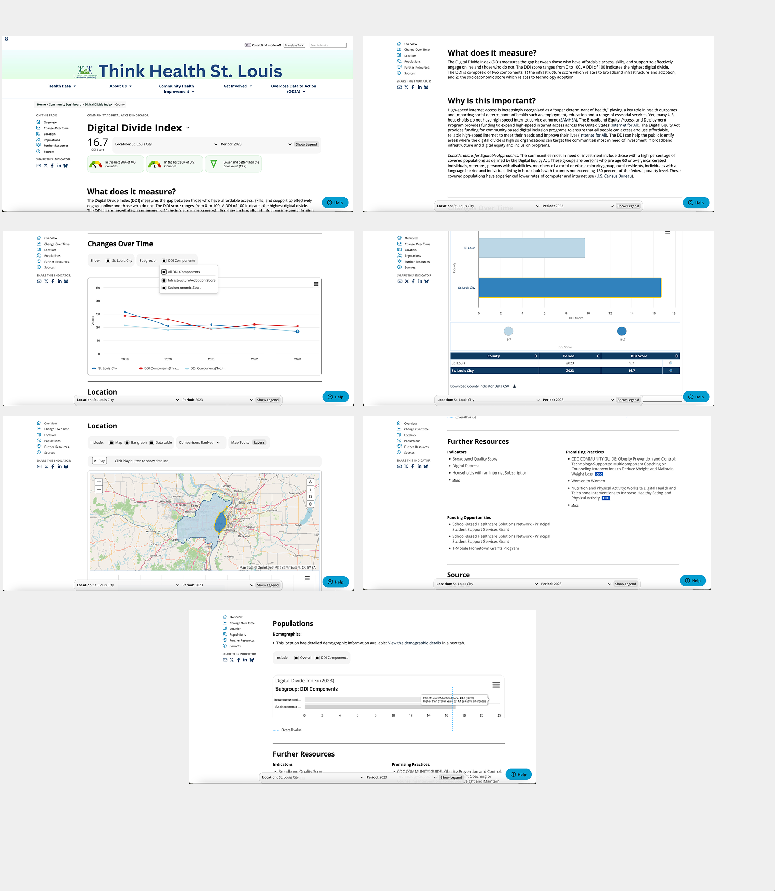
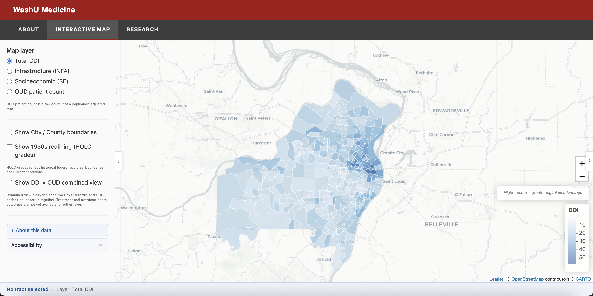
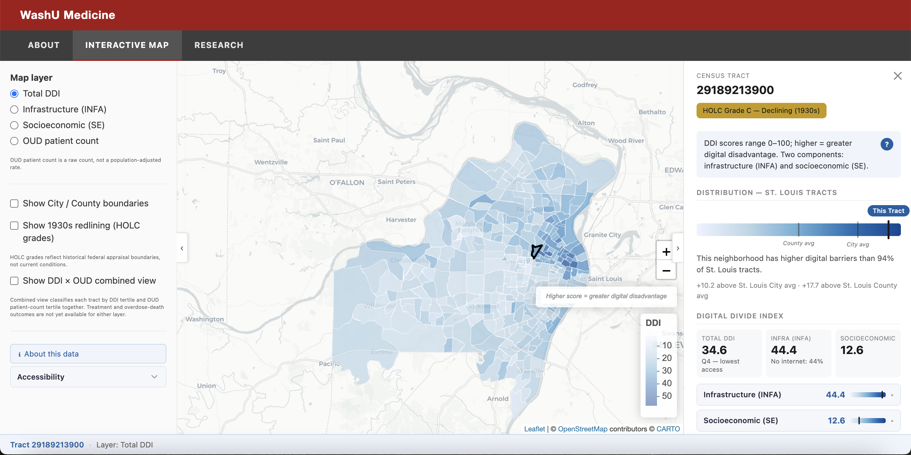

Digital Disparities
Digital Disparities & Psychiatric/Substance Use Care (DDPSA): a data visualization project exploring whether neighborhood-level digital access gaps affect who receives treatment for opioid and stimulant use disorder in St. Louis, built as a 10-week health informatics research collaboration with Washington University School of Medicine and BJC HealthCare, working alongside Principal Investigators Dr. Hannah Szlyk and Dr. Linying Zhang.
The Short Version
In St. Louis, the neighborhoods hit hardest by opioid and stimulant overdoses tend to be the same neighborhoods with the worst access to broadband internet and digital tools. Cross Delmar Boulevard, the city's well-documented racial and economic dividing line, and life expectancy drops by a decade. Two Washington University researchers noticed this overlap informally, well before any data existed to confirm or explain it. This project set out to test whether that overlap is real, and whether it helps explain who receives treatment for substance use disorders and who does not.
Context & Problem
St. Louis's digital divide has deep roots. In 1935, the Home Owners' Loan Corporation graded city neighborhoods for mortgage lending, marking many Black neighborhoods as “hazardous.” Nearly a century later, the neighborhoods that score lowest on today's Digital Divide Index, a Purdue University measure of broadband access, device ownership, and digital literacy, overlap closely with those same boundaries, and the gap is stark: St. Louis City's Digital Divide Index score is 16.7, 72% higher than St. Louis County's 9.7.
The stakes are high. Opioid-related deaths among Black St. Louisans have risen roughly 500% since 2015, and Black patients are 77% less likely than white patients to receive medication for opioid use disorder, even after accounting for insurance coverage. When the federal Affordable Connectivity Program ended in May 2024, more than 394,000 Missouri households lost a $30 monthly broadband subsidy, and many reported dropping telehealth appointments as a result.
This project links two datasets to study whether these patterns are connected: electronic health records from BJC HealthCare for patients diagnosed with opioid or stimulant use disorder between 2000 and 2024, and Digital Divide Index scores at the census tract level across St. Louis City and County.
This visualization displays real patient data with small-cell suppression applied — figures representing fewer than 10 patients are not shown, per standard data privacy practice.
This is Phase 1 of an ongoing initiative, focused on building the underlying data infrastructure and a public-facing visualization tool; it lays the foundation for a future federal grant application and a deeper analysis of how digital access shapes psychiatric and substance use care.
Process
Two decisions shaped the rest of the design, before a single screen of the actual interface was built:
Learning from existing public health dashboards
Rather than designing the tool's interface from scratch, I studied two existing public health dashboards in detail: California's Healthy Places Index and ThinkHealthSTL's local Digital Divide Index dashboard. I adapted patterns that worked well, like a plain-language sentence comparing a neighborhood to the rest of the region, and deliberately avoided others that conflicted with this project's constraints.


A hard color constraint, with one deliberate exception
One constraint shaped how I built every present-day data layer: red, orange, and yellow are excluded from any map or chart encoding current data, using a blue and teal scale instead. The one deliberate exception is the historical HOLC overlay, which keeps the original 1930s federal grading colors, including red for the lowest grade, because restyling a historical document felt like softening it, though a colorblind-safe alternate version of those same historical colors is available with one click.
Final Solution
The tool has two parts: a public landing page that introduces the project in plain language, and the interactive map and research page it links to, built with R Shiny and Leaflet.

Clicking into a tract opens a detail panel with a plain-language read of the numbers: a sentence stating how many St. Louis tracts have higher digital barriers than the one selected, a comparison against city and county averages, an expandable breakdown of the underlying subscores, and demographic context from the census.

Where digital access data connects to health outcomes, the tool draws on real, de-identified electronic health records from BJC HealthCare, linked to census tracts. For each tract, it shows the number of patients treated for opioid use disorder, broken down by age, race, ethnicity, insurance, and gender, along with the share who received psychiatric care and the share who received medication for opioid use disorder. Any tract, or any demographic breakdown within a tract, with fewer than 10 patients is suppressed rather than shown, and the tool distinguishes “suppressed for privacy” from “no linked health record data for this tract,” rather than showing both the same way. The pipeline that builds this data also keeps a synthetic testing dataset physically separate from the real, patient-linked file, so the two can never be mixed up by accident.
Alongside the map, a companion research page mirrors the same tract-level data in a sortable, filterable table, with distribution charts and a data dictionary for anyone who wants to look at the numbers more closely than the map allows.
The tool also includes accessibility features: a colorblind-safe alternate color scheme for the historical overlay, adjustable text size, a reduced-motion mode, and a high-contrast text option, all of which save automatically and persist across visits. No photography, clip art, or illustrated metaphors appear anywhere in the tool, a deliberate choice given the subject matter's history with surveillance and stigmatization.
Final walkthrough: sped up 2×
Map layers & tract detail
Research data table & charts
Outcome
As of this writing, the interactive tool is functioning with real, linked data: electronic health records from BJC HealthCare are connected to 221 of the 340 census tracts in the study area, showing, per tract, the number of patients treated for opioid use disorder along with the share who received psychiatric care or medication for opioid use disorder. Small-cell suppression is active throughout, applied independently at both the tract level and the demographic-breakdown level. Alongside this, the project has secured IRB approval and confirmed the tool will be public-facing, though two outcome measures planned for a future phase, telehealth use and overdose mortality, are not yet linked.
Reflection
Working within this project's color constraint, no red, orange, or yellow anywhere, meant rethinking default chart conventions for nearly every visualization, and it shaped how I approached the rest of the design system. This was also my first time working with real patient data and going through the IRB approval process, which taught me a lot about protecting patient privacy and about designing a tool that communicates the information people need while still prioritizing the health and safety of the patients in the study.
I learned a lot about the history of St. Louis through this project too. Including the 1930s redlining grades was my idea, not something the PIs suggested, and it pushed the team to think more directly about race and the effects of systemic racism on the study and its outcomes. One thing I loved about this project was working with an all-female team, which felt empowering in itself, and I enjoyed being able to design and communicate the work of the talented software developers on my team.